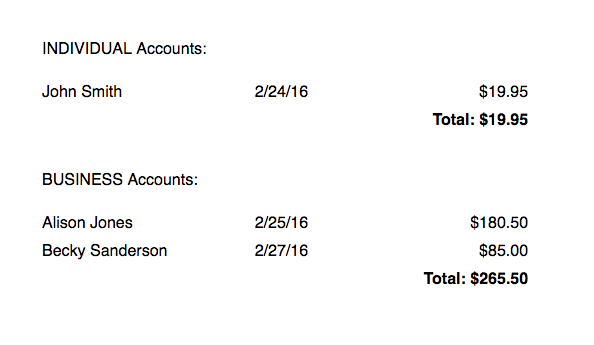

Getting Started
Requirements
jsreports uses standard web technologies (HTML, JavaScript, and CSS) and does not require any browser plug-ins to run. Excel and PDF files are generated entirely in JavaScript, on the client. No server component is required - you only need to include the jsreports JavaScript library in your web page.
jsreports requires jQuery v1.9.0 or higher.
Browser compatibility
jsreports supports all modern web browsers.
- Internet Explorer 9+
- Firefox 3.0+
- Chrome 20.0+
- Safari 4.0+
- Opera 9+
- iOS Safari 3.0+
- Android Web Browser 2.0+
Installation
Extract the jsreports distribution into a folder within your web application. Include the jsreports JavaScript and CSS files in your page. (Note that the src attribute will need to match the location where you installed jsreports.)
Javascript:
<script src="jsreports-all.min.js" type="text/javascript">CSS:
<link href="jsreports-all.min.css" rel="stylesheet" type='text/css' />Your first report
First, define a data source. Data sources for jsreports are JSON or CSV data. You can point to a data source on a server by its URL, or you can provide actual data as a literal JavaScript array. See Working with Data for more details and examples.
To get started with a simple data source, copy and paste the following code. This will be a simple data source with just three rows of data.
var orderData = [{
"userId": "1X39AN4Z92Y",
"userName": "John Smith",
"accountType": "INDIVIDUAL",
"orderTotal": 19.95,
"orderDate": "2016-02-24"
},{
"userId": "1AC43L30HR8",
"userName": "Alison Jones",
"accountType": "BUSINESS",
"orderTotal": 180.50,
"orderDate": "2016-02-25"
},{
"userId": "1CM499NA94R",
"userName": "Becky Sanderson",
"accountType": "BUSINESS",
"orderTotal": 85.00,
"orderDate": "2016-02-27"
}];
// A schema is used to assist the report designer and report engine to know
// about the data types used in the data source.
var orderSchema = {
fields: [{
name: "userId",
type: "text"
},{
name: "userName",
type: "text"
},{
name: "accountType",
type: "text"
},{
name: "orderTotal",
type: "number"
},{
name: "orderDate",
type: "date"
}]
};
var dataSource = {
id: "orders", // Internal reference ID
name: "Orders", // Data source name shown to report designer
data: orderData,
schema: orderSchema
};
Now, we'll define a very simple report that uses this data. You can use the report component to create reports, but here we'll use the report builder API to assemble a report definition in code.
// Create a report definition
var report = jsreports.createReport()
.data('orders') // The report will look for a data source with ID "orders"
.groupBy('accountType', 'accountType', 'desc')
.header(0.35)
.text('[accountType] Accounts:')
.footer(0.5)
.text('Total: [SUM(orderTotal)]', 2, 0, 2, 0.25, {
pattern: '$#,##0.00',
align: 'right',
bold: true
})
.detail()
.text('[userName]')
.text('[orderDate]', 1.75, 0, 1, 0.25, {
pattern: 'M/D/YY'
})
.text('[orderTotal]', 3, 0, 1, 0.25, {
pattern: '$#,##0.00',
align: 'right'
})
.done();
// Render the report
jsreports.render({
report_def: report,
target: $('body').css('min-height', '500px'),
datasets: [ dataSource ]
});
When you run this code, you should get a result like the following:

Next, check out the examples to see how to implement other types of reports.